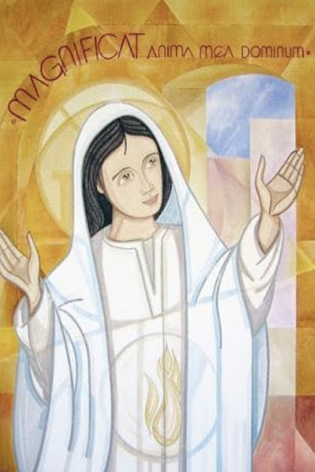

Leitura Orante
Leituras do Dia
Domingo da 20ª Semana do Tempo Comum
Solenidade da Assunção de Maria
(Branco, ofício da solenidade)
16 de agosto de 2020
Oração do dia
Deus eterno e todo-poderoso, que elevastes à glória do céu, em corpo e alma, a imaculada Virgem Maria, Mãe do vosso filho, dai-nos viver atentos às coisas do alto, a fim de participarmos da sua glória. Por Nosso Senhor Jesus Cristo, Vosso Filho, na unidade do Espírito Santo.
Primeira Leitura: Apocalipse 11,19; 12,1.3-6.10
19Abriu-se o templo de Deus que está no céu e apareceu no templo a arca da Aliança. 12,1Então apareceu no céu um grande sinal: uma mulher vestida de sol, tendo a lua debaixo dos pés e, sobre a cabeça, uma coroa de doze estrelas. 3apareceu outro sinal no céu: um grande dragão, cor de fogo. Tinha sete cabeças e dez chifres e, sobre as cabeças, sete coroas. 4Com a cauda, varria a terça parte das estrelas do céu, atirando-as sobre a terra. O dragão parou diante da mulher, que estava para dar à luz, pronto para devorar o seu Filho, logo que nascesse. 5E ela deu à luz um filho homem, que veio para governar todas as nações com cetro de ferro. Mas o Filho foi levado para junto de Deus e do seu trono. 6A mulher fugiu para o deserto, onde Deus lhe tinha preparado um lugar. 107se não oprime ninguém, devolve o penhor devido, não pratica roubos, dá alimento ao faminto e cobre de vestes o que está nu; 8se não empresta com usura nem cobra juros, afasta sua mão da injustiça e julga imparcialmente entre homem e mulher; 9se vive conforme as minhas leis e guarda os meus preceitos, praticando-os fielmente, tal homem é justo e, com certeza, viverá – oráculo do Senhor Deus. 10 Ouvi então uma voz forte no céu, proclamando: “Agora, realizou-se a salvação, a força e a realeza do nosso Deus e o poder do seu Cristo”. – Palavra do Senhor.
Salmo Responsorial: 44(45)
ÓÀ vossa direita se encontra a rainha
com veste esplendente de ouro de Ofir.
!
As filhas de reis vêm ao vosso encontro, e à vossa direita se encontra a rainha com veste esplendente de ouro de Ofir.
ÓÀ vossa direita se encontra a rainha
com veste esplendente de ouro de Ofir. !
Escutai, minha filha, olhai, ouvi, isto: “Esquecei vosso povo e a casa paterna! Que o rei se encante com vossa beleza! Prestai-lhe homenagem: é vosso Senhor!
ÓÀ vossa direita se encontra a rainha
com veste esplendente de ouro de Ofir. !
Entre cantos de festa e com grande alegria, ingressam, então, no palácio real”.
ÓÀ vossa direita se encontra a rainhacom veste esplendente de ouro de Ofir. !
Segunda Leitura: 1 Coríntios 15,20-27
Naquele tempo, 20Cristo ressuscitou dos mortos como primícias dos que morreram. 2121Com efeito, por um homem veio a morte e é também por um homem que vem a ressurreição dos mortos. 22Como em Adão todos morrem, assim também em Cristo todos reviverão. 23Porém cada qual segundo uma ordem determinada: em primeiro lugar, Cristo, como primícias; depois, os que pertencem a Cristo, por ocasião da sua vinda. 24A seguir, será o fim, quando ele entregar a realeza a Deus Pai, depois de destruir todo principado e todo poder e força. 25Pois é preciso que ele reine até que todos os seus inimigos estejam debaixo de seus pés. 26O último inimigo a ser destruído é a morte. 27Com efeito, “Deus pôs tudo debaixo de seus pés”. - Palavra do Senhor!
Evangelho: Lucas 1, 39-56
Naqueles dias,39 Maria partiu para a região montanhosa, dirigindo-se, apressadamente, a uma cidade da Judeia. 40Entrou na casa de Zacarias e cumprimentou Isabel. 41Quando Isabel ouviu a saudação de Maria, a criança pulou no seu ventre e Isabel ficou cheia do Espírito Santo. 42Com um grande grito, exclamou: “Bendita és tu entre as mulheres e bendito é o fruto do teu ventre! 43Como posso merecer que a mãe do meu Senhor me venha visitar? 44Logo que a tua saudação chegou aos meus ouvidos, a criança pulou de alegria no meu ventre. 45Bem-aventurada aquela que acreditou, porque será cumprido o que o Senhor lhe prometeu”. 46Então Maria disse: “A minha alma engrandece o Senhor, 47e o meu espírito se alegra em Deus, meu salvador, 48porque olhou para a humildade de sua serva. Doravante todas as gerações me chamarão bem-aventurada, 49porque o Todo-poderoso fez grandes coisas em meu favor. O seu nome é santo, 50e sua misericórdia se estende, de geração em geração, a todos os que o respeitam. 51Ele mostrou a força de seu braço: dispersou os soberbos de coração. 52Derrubou do trono os poderosos e elevou os humildes. 53Encheu de bens os famintos e despediu os ricos de mãos vazias. 54Socorreu Israel, seu servo, lembrando-se de sua misericórdia, 55conforme prometera aos nossos pais, em favor de Abraão e de sua descendência, para sempre”. 56Maria ficou três meses com Isabel; depois voltou para casa. - Palavra do Senhor!
Leituras do mês
TAGS
missao Amazonia evengel covid-19 indigenas novica papa francisco
Destaques
Província Stella Matutina
Rua São Benedito, 2146 - Santo Amaro - São Paulo - SP |
Tel. (11) 5547-7222


Província Spiritus Divinae Sapientiae
Rua Arnaldo Janssen, 320 - Cara-Cara - Ponta Grossa - PR |
Tel. (42) 3326 4091